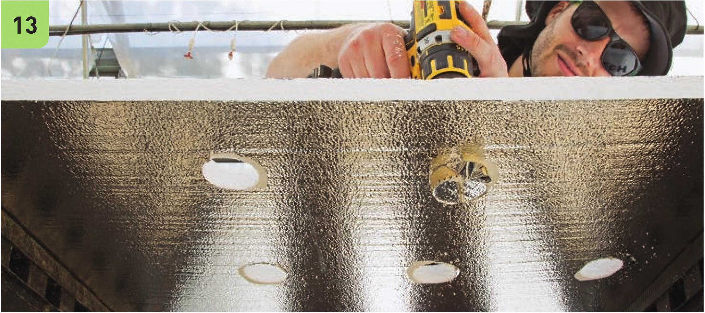
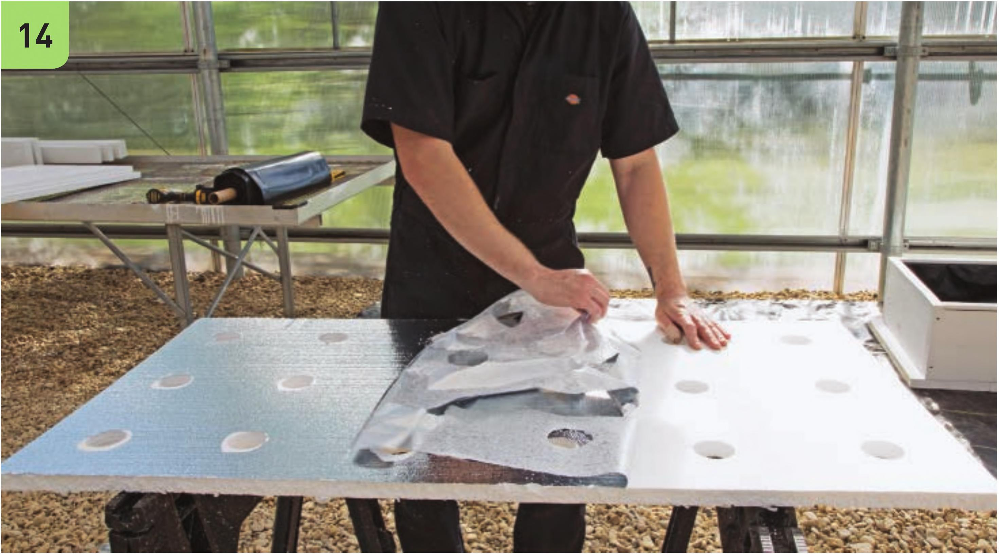
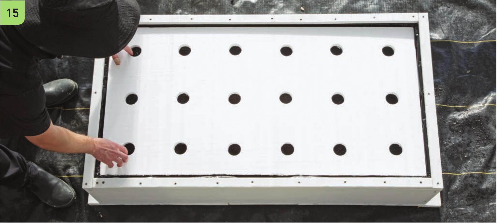

plant site positions on the raft and drill 2" holes with the 2" hole drill bit. 14 Some hydroponic growers leave the reflective surface on their DIY foam boards, but I prefer the look of clean white boards in my clean white reservoir. 15 Test to see if the raft fits in the reservoir. Make any additional adjustments to the raft size so it comfortably fits inside the reservoir. Too much exposed reservoir surface can encourage algae growth, but too snug of a fit makes it difficult for the raft to move downward as the water level drops over time. 16 Place the 2" net pots into the 2" holes in the raft. 56 DIY HYDROPONIC GARDENS



